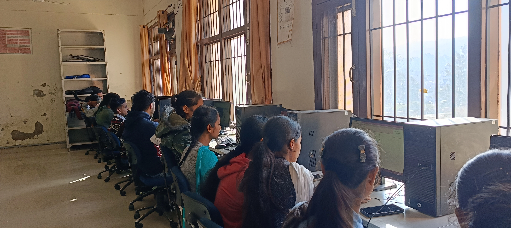
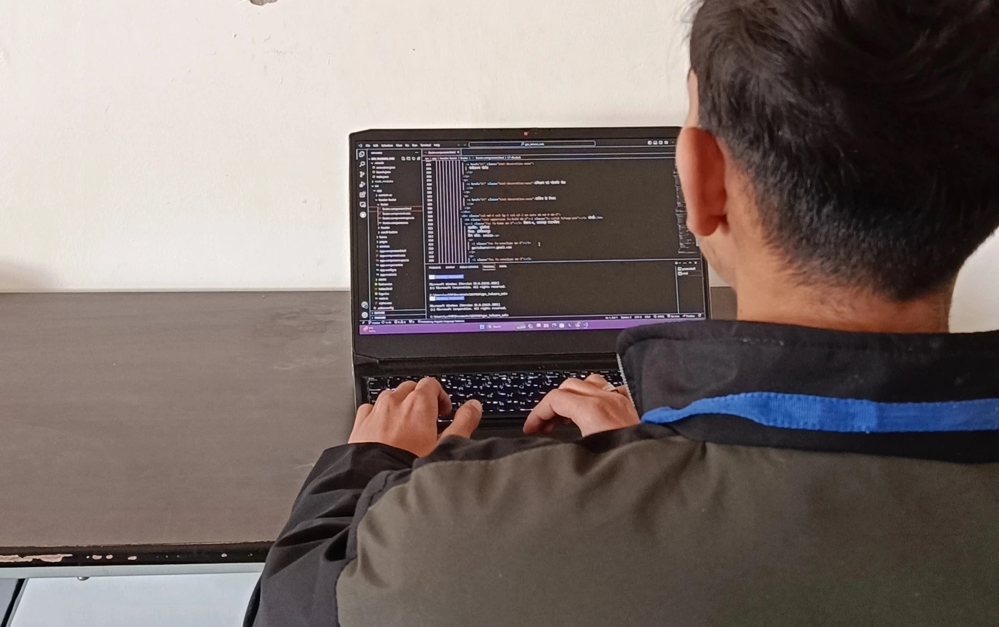

Mechanical Engineering
From robots to rockets, nanomachines to megaprojects, build the future with mechanical engineering: master design, analysis, and innovation to shape the world, one gear at a time
Mechanical Engineering in a Nutshell
- Focus on designing mechanical components and systems:Mechanical Engineering at our college emphasizes the creation and optimization of machines, devices, and systems through a comprehensive understanding of mechanics and materials.
- Hands-on learning experiences:Through well-equipped labs and projects, students gain practical skills in manufacturing, thermodynamics, and fluid mechanics, ensuring they can apply theoretical knowledge to real-world engineering challenges.
- Encouragement of creative problem-solving: Our Mechanical Engineering program promotes innovation and research, empowering students to explore cutting-edge technologies, materials, and sustainable practices in the field.
- Integration with other engineering disciplines: Students benefit from a holistic education, integrating aspects of electrical, civil, and materials engineering to produce well-rounded mechanical engineers capable of addressing complex, interdisciplinary problems.
Our Labs
Survey Lab

A survey lab in engineering serves as a practical training
ground where students gain hands-on experience with the tools
and techniques used in land surveying and data collection.
This crucial component of many engineering disciplines equips
future professionals with the ability to accurately measure,
map, and analyze the physical environment, forming the
essential groundwork for various projects.
Public Health Engineering Lab
A public health engineering lab serves as a practical space
where students translate classroom knowledge into hands-on
experience tackling real-world challenges in public health
protection. Through diverse experiments and projects, future
engineers delve into various aspects of water supply,
sanitation, environmental health, and other crucial areas to
ensure healthy communities.

Concrete lab

A concrete lab in civil engineering delves into the hands-on
exploration of concrete, the most widely used construction
material globally. Students gain practical experience with its
properties, testing methods, and behavior, preparing them for
future roles in designing, constructing, and maintaining
concrete structures.
Electrical lab
An electrical lab serves as a hands-on learning environment
where students delve into the fascinating world of
electricity. Through experimentation with various circuits,
components, and instruments, future engineers and scientists
gain invaluable practical skills and solidify their
understanding of electrical principles.

Fluid Mechanics Lab

The fluid mechanics lab in mechanical engineering serves as a
gateway to the mesmerizing world of fluids, both at rest and
in motion. This hands-on haven empowers students to transcend
the realm of theoretical knowledge and dive directly into the
dynamic world of liquids and gases. Through a diverse array of
experiments, measurements, and intriguing apparatus, the lab
becomes a living textbook, fostering a deeper understanding
and igniting a passion for this fundamental engineering
subject.
Thermodynamics lab
In engineering, a thermodynamics lab serves as a practical
learning space where students delve into the principles of
energy conversion and transformation, solidifying their
theoretical understanding through hands-on experience. This
immersive environment equips future engineers with crucial
skills and insights into various energy-related applications
across different engineering disciplines.
Foundary lab
In the realm of engineering, a foundry lab transforms into a
captivating space where students delve into the captivating
world of metal casting. It's more than just pouring molten
metal; it's a hands-on exploration of the entire casting
process, from pattern making to finished product, equipping
future engineers with invaluable practical skills and a deeper
appreciation for this versatile manufacturing technique.
Refrigeration and Air conditioning (RAC) lab
In the realm of mechanical engineering, the refrigeration and
air conditioning (RAC) lab serves as a practical training
ground for students to explore the fascinating world of
thermal comfort and food preservation. It transcends
theoretical learning by providing hands-on experience with
various components, systems, and concepts, equipping future
engineers with valuable skills and a deeper understanding of
this crucial field.